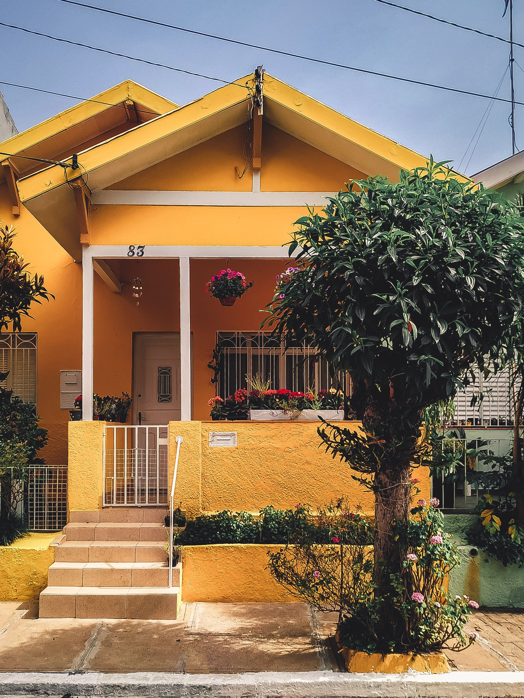
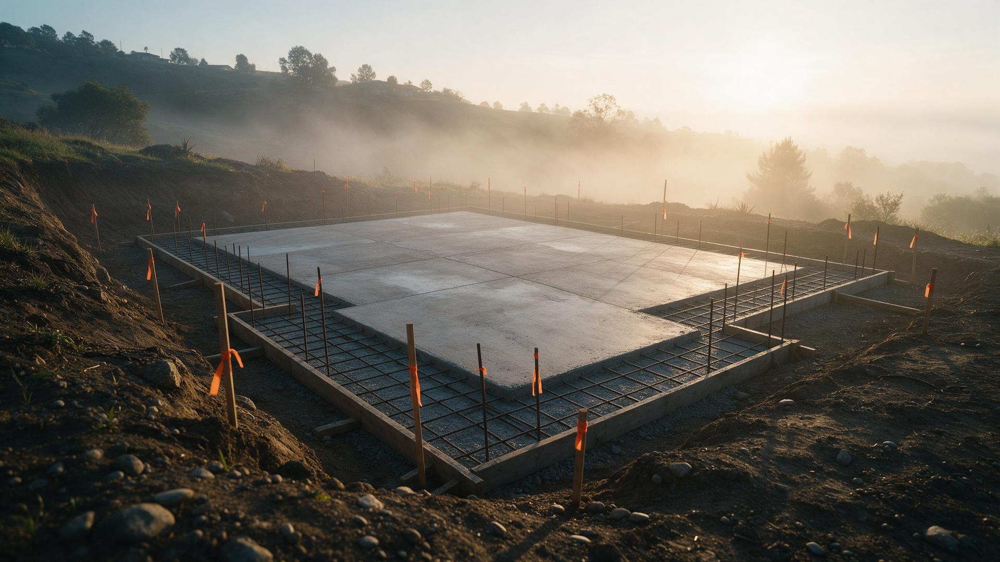
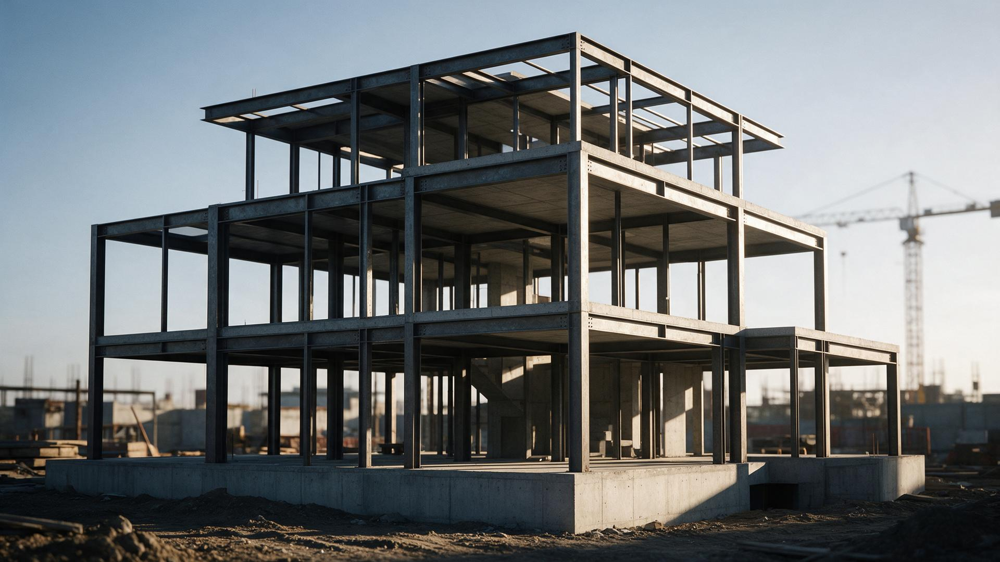
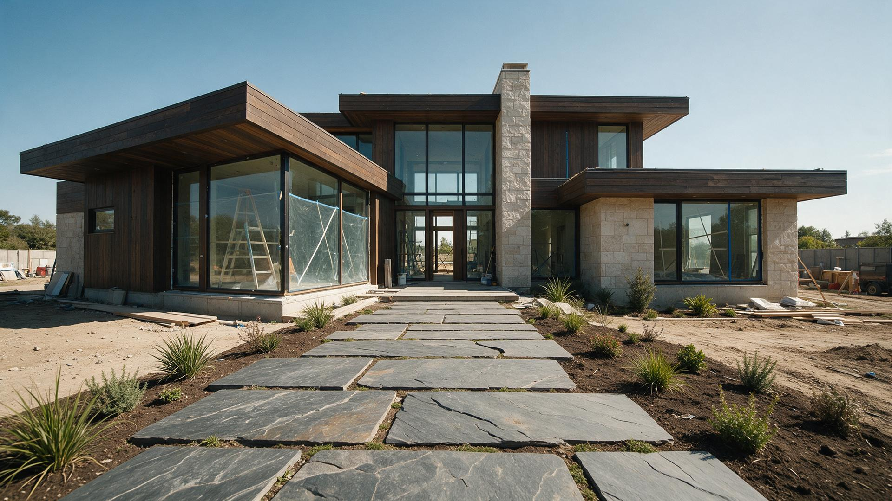
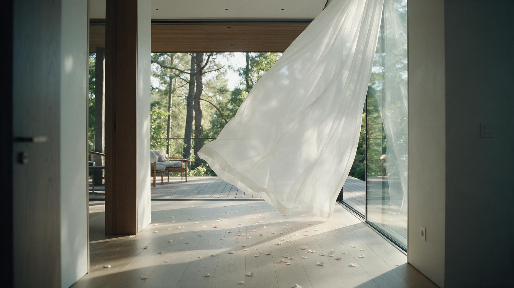
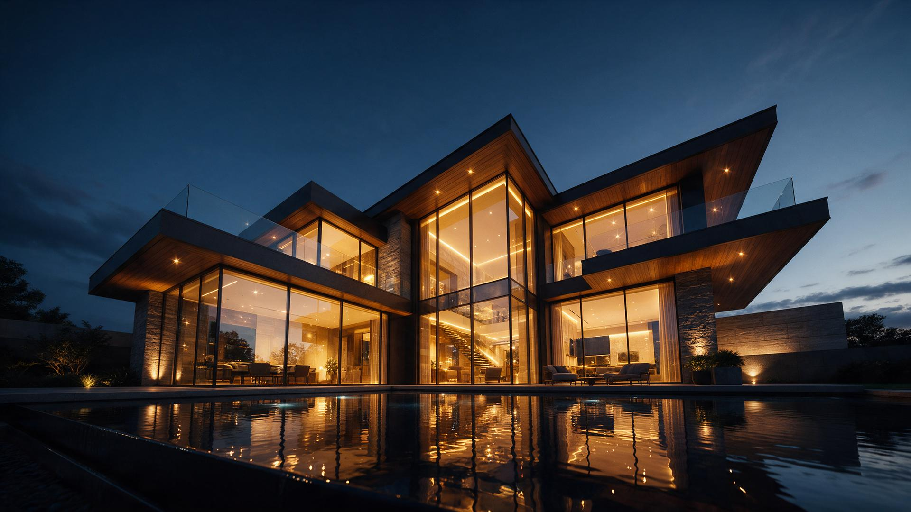

Yes — the method (surge line, sun path, salt palette) travels. We study each new coast for a full tidal cycle before quoting.

36°12′N 29°38′EKaş coast, Türkiye
Coastal architecture atelier
MERIDIAN
Houses drawn by tide, light and salt air.
- Set-back
- 38 m from surge line
- Openings face
- 196° south-south-west
- Finish
- 316 stainless · limestone · lime
Position
Position
We do not build on the coast. We build with it — the surge line sets the floor, the sun sets the openings, and the salt sets the palette.
- 01SurgeFloor level and set-back come from a winter storm line, not a planning minimum.
- 02SunEvery opening is placed on the sun path before it is placed on a facade.
- 03SaltMaterials are chosen for how they weather in sea air, not how they photograph new.





Signature · Plot to dusk
01 / 05
Plot
Sunrise on the cleared plot. Survey pegs, no assumptions — we read the surge line before we draw one.
02 — Index of works
Six houses, six shorelines.
Studies and built-concept work. Each row carries its coordinates; hover, focus or scroll to open the plate.
- 01Tidewater House36.20°N 29.64°EResidence · pool court2025
- 02Salt Gate Residence36.78°N 28.25°EStone house · chimney spine2024
- 03Lantern Deck36.52°N 30.54°ECliff terrace · timber deck2024
- 04Low Tide Pavilion37.03°N 27.43°EGlass balcony house2023
- 05Reef Quay Villas36.86°N 28.27°EOver-water cluster2023
- 06Kestrel Terrace36.30°N 29.38°EEvening terrace · plunge pool2022
03 — Sun path
Light is the first structural member.
06:12AZ 076°ALT 00°
Bedroom
East light arrives at the pillow, low and warm. No blinds drawn at dawn — the eave only starts working at 10:00.
04 — Palette
Five materials. All tested in salt air.
- 01
Low-iron glass
Clear, not green — the sea is the only colour in the room.
8 + 8 mm laminated - 02
Honed limestone
Quarried within 60 km; honed so salt rinses off.
Floors · walls · steps - 03
316 stainless
The only metal we leave exposed at the water side.
Marine grade · brushed - 04
Thermo-ash
Heat-treated timber for soffits and decks; greys evenly.
Oil-free · silvers - 05
Signal line
One vermilion datum on every project: the surge line, painted.
Mineral paint
05 — Practice
A commission, tide by tide.
- Weeks 1–2
Walk the shore
Site visit at low and high water. We mark the storm line, the view cone and where the wind comes from.
- Weeks 3–6
Set the line
Floor level, set-back and orientation are fixed first and signed off before any form is drawn.
- Weeks 7–20
Draw the house
Plans, sections and a sun-path model. You see the light in the rooms before the walls exist.
- Through handover
Stay on site
We visit at every pour and every glazing day, and return after the first winter to inspect salt wear.
Questions
A 24-page PDF: three worked shorelines, our material palette with weathering notes, and a commission timeline with fee bands.
Meridian is a fictional atelier created as a design demonstration by İzden Creative; the projects are concept studies.